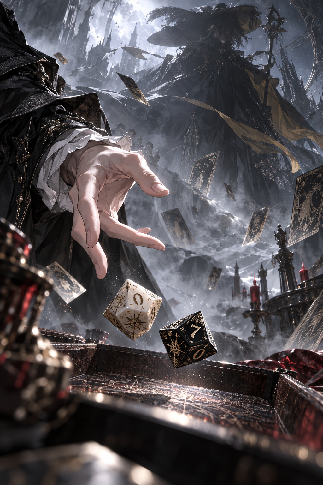
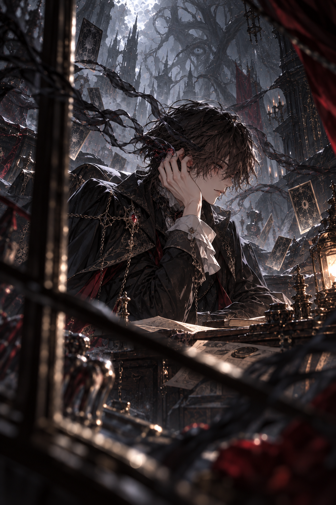
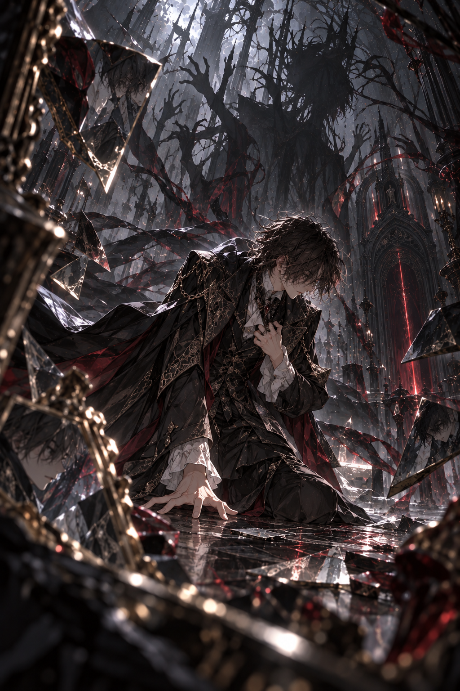

掷骰检定
CAST THE DICE
VIEW MORE >
呓语
WHISPERS
VIEW MORE >
失控表现
LOSS OF CONTROL
VIEW MORE >03KEEPER'SINSTRUMENTS
Cast the dice
命运落定之前
掷下骰子，静候回响。
/ 100
等待掷骰等待揭示

CAST THE DICE
VIEW MORE >
WHISPERS
VIEW MORE >
LOSS OF CONTROL
VIEW MORE >Cast the dice
掷下骰子，静候回响。
等待揭示